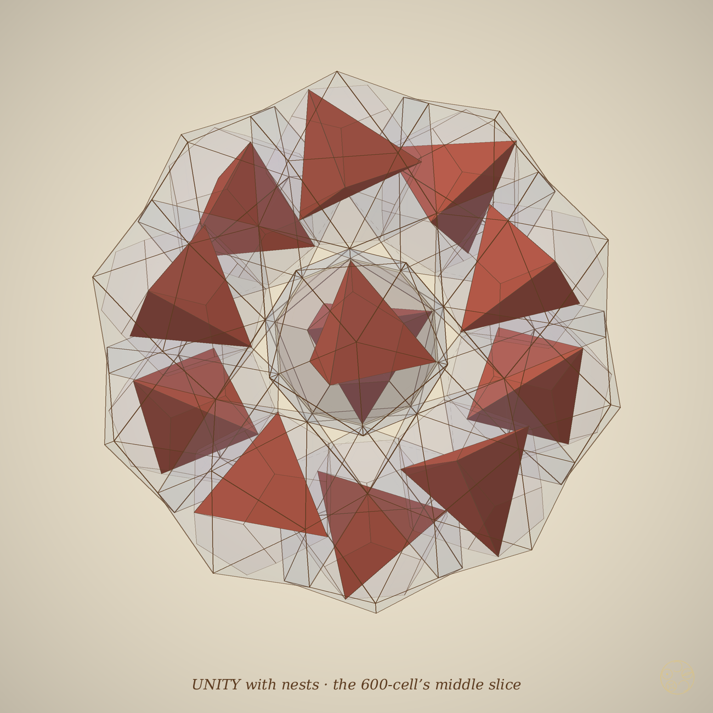
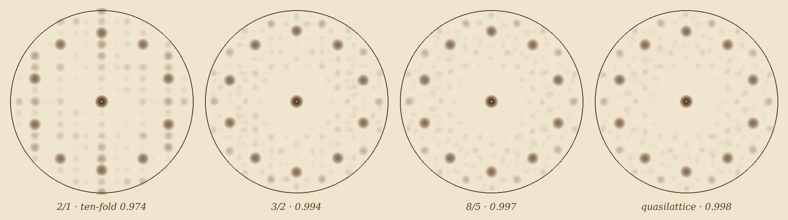

Plato's five solids do not fill space together. But the octet, the honeycomb of tetrahedra and octahedra, can hold all five at once: inside every octahedron sits an icosahedron, inside that a dodecahedron, then a cube, then a tetrahedron, and every tetrahedron of the octet holds the same nest at half the size. The nest goes on for ever, a third smaller at each turn. And a ladder of crystals, each a golden ratio larger than the last, climbs from the octet's cubic order to the five-fold order of quasicrystals, with a nest on every icosahedral seat.
Proof. Place O with corners (±1/√2, 0, 0) and cyclic. The points (0, ±a, ±b) and cyclic with b = φa, a + b = 1/√2 lie on O's edges in the golden ratio and are the corners of a regular icosahedron of edge 2a = √2/φ² (Pacioli). Each face of O contains three of these points, so eight faces of I lie in O's face planes: I and O share their inscribed sphere and their eight face centres on the three-fold axes. The 20 face centres of I are the corners of the dual dodecahedron D; eight of them are those shared face centres, (±t, ±t, ±t) with t = 1/(3√2), which are the corners of a cube (Euclid XIII.17: a cube on eight corners of a dodecahedron) and are O's face centres, proving (b); its edge is 2t = √2/3, and the alternate corners give T with edge 2t√2 = 2/3. For (c), the midpoints of a regular tetrahedron's edges form an octahedron of half the edge, and cutting the corners at one third gives the Archimedean truncated tetrahedron, which contains the midpoints. For (d), a corner of C outside T and its three neighbours in T form a trirectangular tetrahedron with legs √2/3, and O's centre pyramid is trirectangular with legs 1/√2. The octet is periodic (fcc), so the nests are too. Every step was checked in exact arithmetic in Q(√2, √5) (proof/exact_nest.py; all factors and sizes of §§2–3 in proof/exact_audit.py). ∎
Proof. Multiply the factors of Theorem 1 and of the inscriptions in §2; the golden numbers cancel in (a). The orientations follow from the corners: O′ has its corners on O's axes, C′ has corners (±t, ±t, ±t) like C. Exact check proof/exact_loops.py. ∎
Twelve classical inscriptions join the five solids (corners on corners, on edge points or on face centres), with these edge factors: O ⊃ I √2/φ² (Pacioli); O ⊃ C √2/3 (face centres); O ⊃ T 2/3 (four face centres); I ⊃ D φ/3 (face centres); I ⊃ O φ/√2 (six edge midpoints on the axes); D ⊃ C φ (eight corners); D ⊃ I φ²/√5 (face centres); D ⊃ T φ√2 (four corners); C ⊃ I 1/φ (touching the faces); C ⊃ O 1/√2 (face centres); C ⊃ T √2 (four corners); T ⊃ O 1/2 (edge midpoints). With the truncated tetrahedron U: T ⊃ U 1/3, U ⊃ O 3/2, U ⊃ T 5/3. These give fourteen chains through all five solids, and eighteen through all six with U (data-nest-catalogue*.txt). Both cells of the octet carry a complete chain: T ⊃ O (1/2) continues as O's chain at half size.
| gap | pieces |
|---|---|
| O − I | the six Admiral Caps (DICTO, F21), one round each corner of O |
| I − D | 12 Sheriffs (DICTO's name: the pentagonal cap, a corner of I over each face of D; base edge = D's edge, slant edges exactly √3/φ × base) and 30 Lone-stars (DICTO's name: the thin wedge, an edge of I with the edge of D beneath it, crossing at right angles; its other four edges equal). New shapes. |
| D − C | Euclid's six roofs |
| C − T | four copies of O's centre pyramid at 2/3 (Theorem 1d) |
Route of the 4D structures: the 120-cell's first shell, 1 + 12 dodecahedra, is DICTO's Dodeca-13 (13 dodecahedra, 30 wedges, 20 needles); each dodecahedron holds the chain D ⊃ I ⊃ O ⊃ C ⊃ T (edges 1, φ²/√5, φ³/√10, φ³/(3√5), √2 φ³/(3√5)), and with each outer nest the mirror image of the central one in their common face, all 13 nests are regular and nested; six outer octahedra are parallel to the central one, six turned by 26.57° (numerical). The 600-cell's twenty tetrahedra round one corner, built with regular tetrahedra, are pairwise disjoint and leave 14.1% of their hull open (numerical) (the three-dimensional trace of the four-dimensional curvature); each holds T ⊃ U ⊃ O ⊃ I ⊃ D ⊃ C. The middle slice, the icosidodecahedron, with twelve J11 on its pentagons is DICTO's UNITY; each J11 with its pentagonal cap is a regular icosahedron holding a nest, the caps are disjoint (total volume (5 + √5)/2), and their tips form a regular icosahedron of edge exactly 2/√5 at UNITY's heart, clear of every cap.
Proof. Let r be the central dodecahedron's face distance and nk its face normals. The outer dodecahedron mirrored in face k has centre 2r nk and its far face in the plane p · nk = 3r, so the cluster reaches 3r along nk; any other outer dodecahedron j reaches at most 2r (nj · nk) + R ≤ 2r/√5 + R = 2.397 < 3r = 3.341 (edge 1; R the circumradius), and the wedges and needles lie in the hull of the thirteen. So the cluster's extent in every face direction is exactly 3r, and the largest copy inside the slab |p · nk| ≤ r is at scale 1/3. ∎


Figure 2. Left: the nested Dodeca-13 (the 120-cell's 1 + 12) down a five-fold axis, turns aligned by mirroring; the tetrahedra (solid) show each cell's nest. Right: UNITY (the 600-cell's middle slice) with a nest in each of its twelve icosahedra and the heart icosahedron (gold) formed by the caps' tips.
The icosahedral quasilattice is the shadow of the six-dimensional cubic lattice cut by a window, the rhombic triacontahedron, in the hidden directions (Kramer and Neri 1984); its tiles are the two golden rhombohedra. Replacing the golden number by the Fibonacci ratios 1, 1/2, 2/3, 3/5, … in the hidden directions only (Elser and Henley 1985) makes the shadow periodic: the cubic approximants, each a rung of a ladder whose cell side grows by φ.
| rung | cell | golden rhombohedra per cell (prolate + oblate) = points | seats per cell | ten-fold score |
|---|---|---|---|---|
| 1/1 | body-centred cubic, side 2φ² | 10 + 6 = 16 | 0 | 0.9158 |
| 2/1 | cubic, side 2φ³ | 84 + 52 = 136 | 1 | 0.9736 |
| 3/2 | cubic, side 2φ⁴ | 356 + 220 = 576 | 6 | 0.9937 |
| 5/3 | body-centred cubic, side 2φ⁵ | 754 + 466 = 1220 | 16 | 0.9969 |
| 8/5 | cubic, side 2φ⁶ | 6388 + 3948 = 10 336 | 0.9974 | |
| 13/8 | side 2φ⁷ | 27 060 + 16 724 = 43 784 | 0.9976 | |
| quasilattice | not periodic | ratio φ | share τ⁻⁹ | 0.9977 |
Proof (outline). (a) Λ⊥ is a lattice, the points per cell are the lattice points in the window, a tile of type ijk exists exactly when its corner's hidden image lies in the complementary parallelepiped, and the window is dissected into translates of the same twenty parallelepipeds (Shephard 1974), each holding its index of points. (b) A rhombohedron meeting the point at an obtuse corner would put a further point at distance 2; so all surrounding tiles are prolate with the point at their acute corner, twenty of them. (c) Two seats differ by a lattice vector whose hidden image lies in twice the seat window; a finite enumeration on every rung finds none shorter than √3 φ². The seat counts 1, 6, 16 are generic values (expected 1.38, 6.8, 15.8), and the seat share tends to τ⁻⁹ = 0.01316, the known frequency of the triacontahedral vertex (Henley 1986; Baake and Grimm 2012); on 5/3 it is already 0.0131. ∎
The tile counts in the table are exact (integer arithmetic from Theorem 3a, script exact_counts.py); the seat counts are those of our window shift, and the ten-fold scores are numerical. Each seat carries a nest: its twelve neighbours form a regular icosahedron of edge 2 holding D, C, T and O, and the twenty prolate rhombohedra round it are DICTO's golden skin; neighbouring nests never meet. On the first rung's gaps the golden skin also wins as a filling: grown in φ-steps along the icosahedra's five-fold axes it fills 82% of the gap round icosahedra on a body-centred lattice, against 54% for Platonic gravel (voxel estimates, grid 48³).

Known: Pacioli's icosahedron in the octahedron; the cube on a dodecahedron (Euclid XIII.17) and the classical inscriptions of §2; the octet; the rational approximants and their cell sides (Elser and Henley 1985; the side rule as quoted by Ishimasa 2019); the triacontahedral vertex and its frequency τ⁻⁹ (Henley 1986; Baake and Grimm 2012). New within the sources checked: that the nest's cube is the octahedron's dual cube, and the octet as a lattice carrying all five solids in every cell (Theorem 1); the nest for ever by thirds and the golden loop (Theorem 2); the gap pieces of I − D (Sheriff and Lone-star); the nested supercells and the Dodeca-13 at 1/3; the exact count (a) and the seat characterisation and spacing (b, c) of Theorem 3; nests on the ladder and the measured climb. Sources checked: the reference library's full text (251 PDFs, keyword sweep; 25 read in context, including Baake–Grimm 2012, Baake 1999, Dietl–Eschenburg 2016, Hann–Socolar–Steinhardt 2016, Frettlöh 2011, Kramer 2011, Senechal 2004, Moody 2000, Kleman 2013, Ishimasa 2019, Deguchi et al. 2015, Fujita et al. 2013, Pacioli 1509, Kepler 1596 and 1619, Heath's Euclid); web: Wikipedia, Regular icosahedron, Divina proportione, Compound of dodecahedron and icosahedron, Dual polyhedron, Tetrahedral-octahedral honeycomb; the Physical Review Letters abstract of Elser and Henley 1985. Not seen in full: Elser–Henley 1985, Henley 1986, Goldman–Kelton 1993, Elser–Sloane 1987, Katz–Duneau 1986, Kramer–Neri 1984.
As with the Ogdoecontahedron, several things were not sought but appeared on the way: the dual cube inside the nest; in D ⊃ C ⊃ I the icosahedron has the dodecahedron's own edge; in the chain U ⊃ O ⊃ I ⊃ D ⊃ C ⊃ T the innermost tetrahedron has the outer truncated tetrahedron's edge; the third that appears twice, in the nest's turn and in the Dodeca-13 inside itself; UNITY's heart icosahedron of edge 2/√5; and the two new pieces of I − D, the Sheriff and the Lone-star.
The body-centred and simple cubic alternation of the rungs as a theorem; nests joined across seats; a comparison of the seats with the cluster centres of real 1/1 and 2/1 approximant crystals; whether this ladder closes DICTO's book The Golden Ladder, whose top rung, E8, casts exactly this quasilattice into three dimensions (Elser and Sloane 1987).
Euclid, Elements, book XIII (Heath, 1908). — L. Pacioli, De divina proportione (1509). — J. Kepler, Mysterium cosmographicum (1596); Harmonices mundi (1619). — H. S. M. Coxeter, Regular Polytopes, 3rd ed., Dover (1973). — P. Kramer, R. Neri, On periodic and non-periodic space fillings of Em obtained by projection, Acta Crystallographica A40 (1984) 580–587. — V. Elser, C. L. Henley, Crystal and quasicrystal structures in Al-Mn-Si alloys, Physical Review Letters 55 (1985) 2883–2886. — C. L. Henley, Sphere packings and local environments in Penrose tilings, Physical Review B 34 (1986) 797–816. — V. Elser, N. J. A. Sloane, A highly symmetric four-dimensional quasicrystal, Journal of Physics A 20 (1987) 6161–6168. — A. I. Goldman, K. F. Kelton, Quasicrystals and crystalline approximants, Reviews of Modern Physics 65 (1993) 213–230. — G. C. Shephard, Combinatorial properties of associated zonotopes, Canadian Journal of Mathematics 26 (1974) 302–321. — M. Baake, U. Grimm, Mathematical diffraction of aperiodic structures, Chemical Society Reviews 41 (2012) 6821–6843. — T. Ishimasa, Zn–Au–Yb quasicrystal and approximants (2019). — DICTO: Every Mix of the Platonic Solids Fills Space (#47); Reading the Voids (#96); DICTO Dodeca-13; The Golden Ladder (book); UNITY and the Lotus seed (Icosa-13 study).